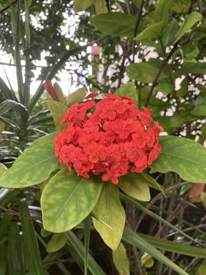

うるがいの話 ある日
最新: コロナに感染【うるがいの話 ある日】とは 一日だけのプログです
『うるがいの話』の最新一日だけのプログで、通信料が少なく経済的だ。カニの画像をクリックすると全ての日付が載る『うるがいの話』サイトを表示します
|
|
【うるがいの話】 うるがい(ｳﾙｶﾞｲ urugai)とは、『もずくがに』の名前でとても大きくなります。 |
|---|---|
|
|
【カミマヤーの話】 猫のことを方言でマヤーといいます。カミマヤー（kamimayaa）とは、神の猫のことです。 |
|
【たながぁの音楽】 たながぁ（ﾀﾅｶﾞｰ tanagaa）とは手長えびのことで、何種類かあり大きいのは車 エビぐらいになります。 |

|
【ぶながぁの話】 ぶながぁ(ﾌﾞﾅｶﾞｰ bunagaa)とは、赤い髪の毛、赤い身体、そして身長は１ｍ２０ｃｍ ぐらい、川の蟹を食べているの目撃された。場所は沖縄県国頭郡大宜味村のと ある村僕の隣近所に住んでいる爺さんから、聞いた話です。 |
|
|
【ギーマの話】 ギーマ(giima)とは、山原の里山に咲くスズランに似た、 花を付けます。実は食べられます、 気が付くと口の周りが紫になっています。 |
2025年05月19日 (月）コロナに感染
16:38

『コロナに感染してるって』、病院へ連れ添った子供が答えた。オ
ー、２回目じゃん。恐らくは、台湾の空港で感染したのじゃないか
と言う。確かに、昨日の朝までは元気でジョギングを終えたあたり
から、熱が出始めて計ると３８度、そして今朝も熱がある。これは
病院へ、行ったほうがいいということになる。
子供は、事前に病院へ電話する。病状の説明など長い電話、病院へ
来るにはどの程度かかりますかと尋ねられ、３０分と答えたら『住
所から判断すると、そんなにかからないですよね』と、『車の番号
は、覚えてないのですか』と言われ、熱がある人にこの対応は、お
かしいよねと、子供はプンプン怒っていた。
発熱外来なので、駐車場で待機する。コロナ・インフルエンザの検
査を行い、待つこと一時間、医者と電話で診察、そして２０分ほど
で清算、２，６００円。『処方箋があります』と受付の人が言う。
オ、誰が薬を貰いにいくんだ？、『私でしょう』と子供が言う。薬
局では、コロナですかと普通に確認され、風邪薬と同じものをもら
った（６百円）。
家に帰って、薬を飲む前と食事をしたが、目玉焼きとハムを残して
いた。食べようかな？、いやいや、コロナに感染している人だぜ。
やめた（子供が後で食べるようにと片づけた）、なお、私は無症状
だが、ヨメは・・・・、微妙。
家の庭のサンダンカ
